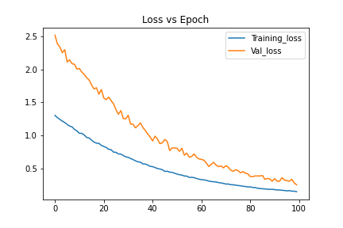
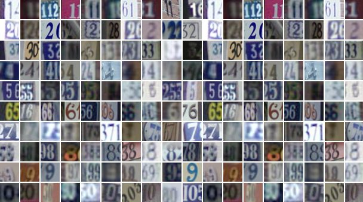
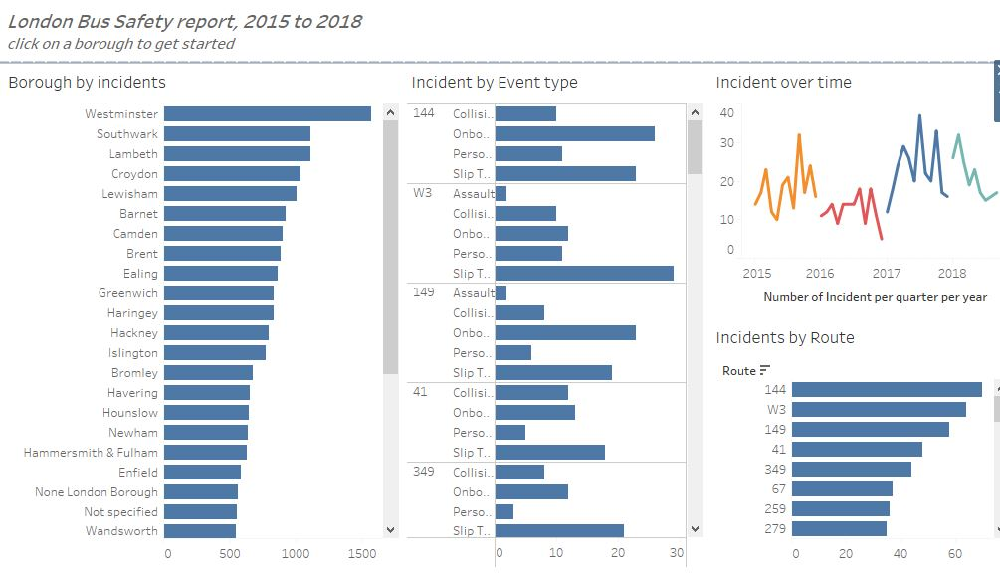
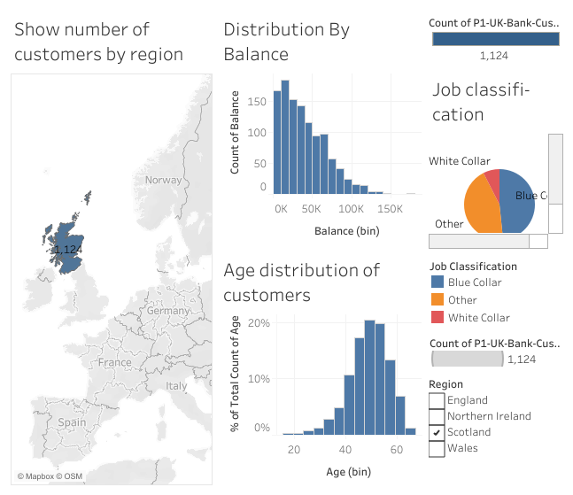

Predicting survival times of cancer patients with high-dimensional data is challenging task because regression-models does not work well
in cases where number of features is higher than the number of samples. In this project we are using different types of autoencoder to reduce dimensionality of gene-expression data and predict survival times with the reduced features.

Satellite images showing street sign numbers are extracted from google street view. The goal is to build a classifier that can detect street sign numbers. I used an Artificial Neural Network and a Convolutional Neural Network to classify signs from 0 to 11. CNN outperformed ANN with a less number of weights, though CNN took a higher training time than ANN.
View in Github

I collected London bus incident dataset and tried to highlight some insights like what types of routes are contributing to more incidents, trends of incidents over time etc..

The purpose of this project is to develop a model to predict the weight of an alligator from its length. The datasets are taken from aerial photographs or from visual sightings from air or boat.
Analysis of the dataset has been conducted and from that a simple regression model has been developed and its validity was determined. After that, a transformed model was compared with the simple linear model and the best model has been chosen

Although the sequence of pseudo-random numbers is not truly uniform, a good generator will produce numbers that gives essentially the same results as true random numbers. Generation of random numbers has numerous applications in many scientific problems. The problem asks to generate random numbers from a uniform random generator and use Kolmogorov-Smirnov test to find if the samples come from a uniform distribution

The objective is to estimate \pi that best describes this gaussian model and also evaluate the algorithm.

The bootstrap method is a resampling technique used to estimate statistics on a population by sampling a dataset with replacement. In this project, we are given a dataset of haircut costs from a small classroom. We are going to use bootstrap method to find 90% confidence interval for the average number of dollars that a student at this college spends on a haircut. We are also going to use 2 of the bootstrapping techniques: percentile and double bootstrapping to build this confidence interval and compare the results obtained by these 2 methods..

The objective in survival analysis is to establish a connection between covariatesand the time of an event. In this project we are going to perform dierentsurvival analysis techniques on publicly accessible dataset. For the 1st part we are mainly interested in using Kaplan- Meier plots to visualize survivalcurves and performing Cox proportional hazards regression to describe the effects of each variable.

A web application built in python to represent different motor vehicle collision data stats in New York.

An interactive tableau dashboard with charts representing balances corresponding to age, region and race.